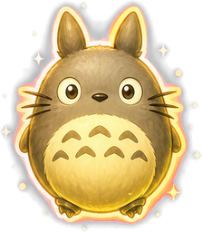
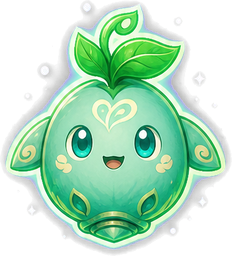

환경설정
자동 플레이 실력
초보
중수
고수
프로
치트 박스 사용
치트 박스는 게임 화면에서 마우스로 끌어 옮길 수 있습니다.
닫기
Bapuri's Flight
0
구역
1
·
1

0
0

0
BOSS
치트
속도
×1
×2
×4
×8
안 죽기
드랍 확률
11%
드랍 종류
P
S
E
T
H
B
여행 지도
지도 열기
보스
보스 소환
무기
강화 +1
다음 목적지를 골라주세요
내 위치
지도를 끌어 움직이고, 밝게 빛나는 도시를 눌러 여행을 떠나자